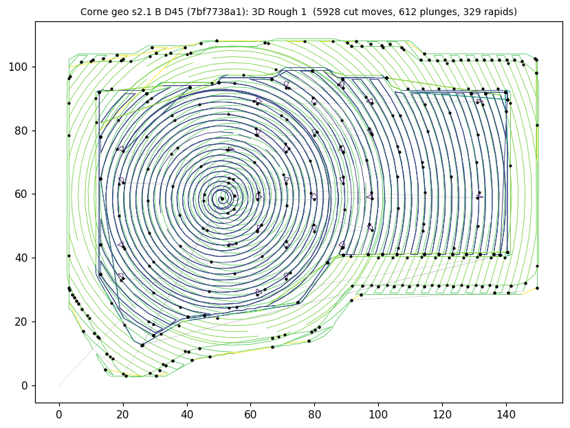
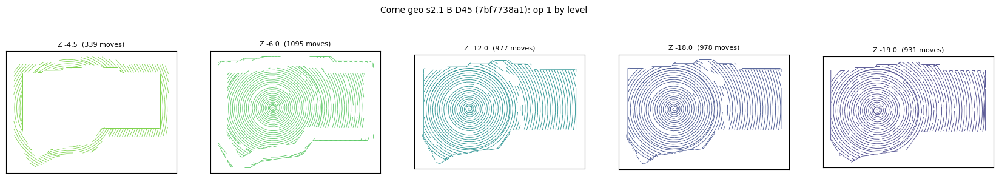
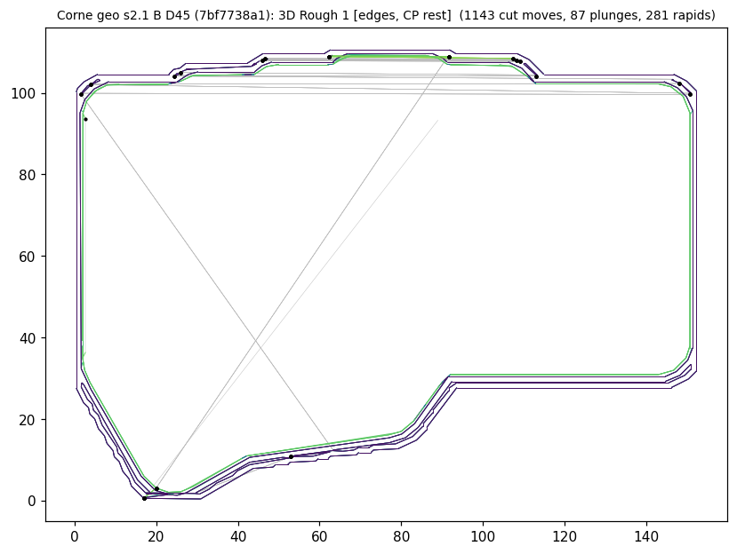
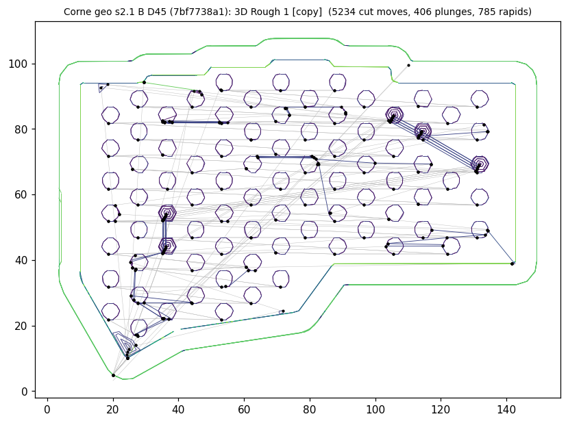
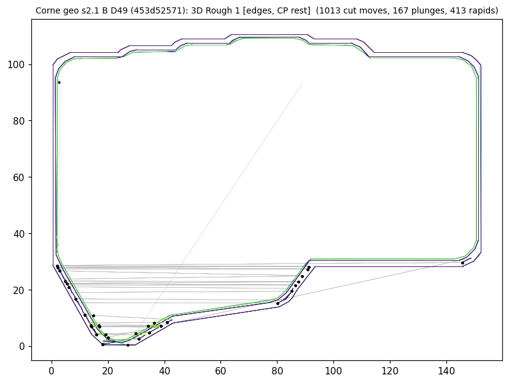
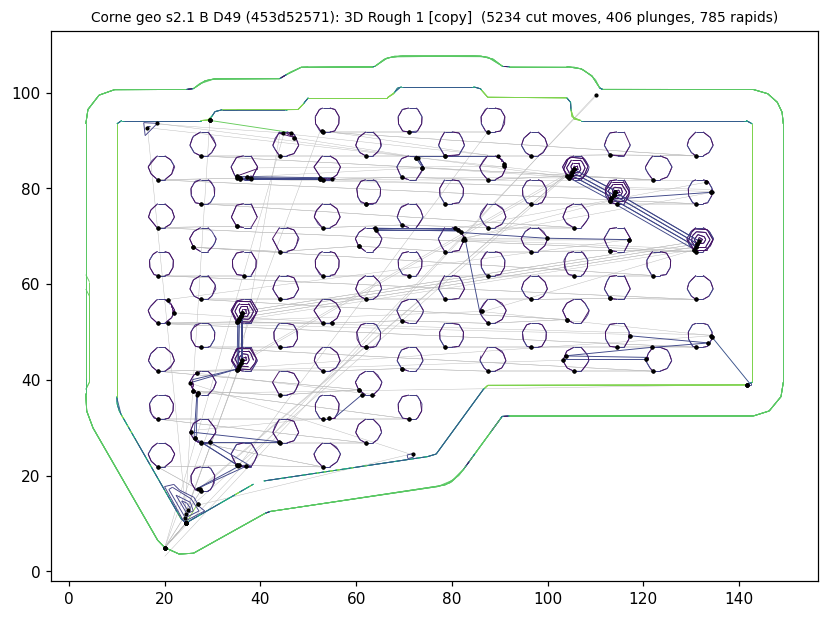

D49 toolpath renders ( from program.nc; colour = Z, black dot = plunge, grey = rapid)
Corne geo s2.1 B D45 (7bf7738a1): 3D Rough 1

Corne geo s2.1 B D45 (7bf7738a1): op 1 by level

Corne geo s2.1 B D45 (7bf7738a1): 3D Rough 1 [edges, CP rest]

Corne geo s2.1 B D45 (7bf7738a1): 3D Rough 1 [copy]

Corne geo s2.1 B D49 (453d52571): 3D Rough 1
Corne geo s2.1 B D49 (453d52571): op 1 by level

Corne geo s2.1 B D49 (453d52571): 3D Rough 1 [edges, CP rest]

Corne geo s2.1 B D49 (453d52571): 3D Rough 1 [copy]
